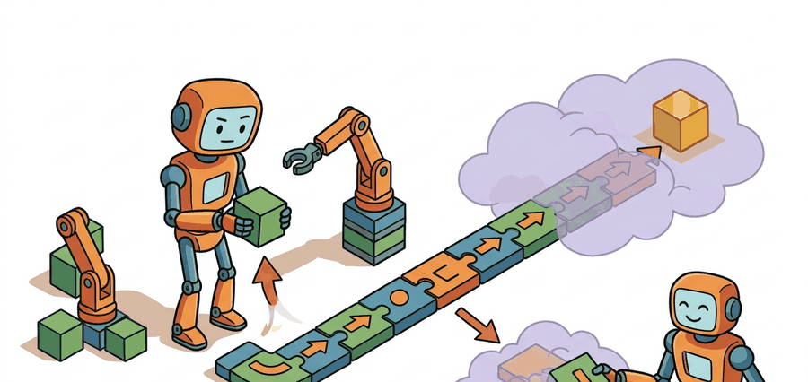

"The most useful skills are the ones nobody thought to name in advance."
A Surprised Skill Designer

This section assumes familiarity with the options framework introduced in section 26.2, particularly the initiation set, internal policy, and termination condition that define an option. The skill-discovery and hierarchical RL ideas developed here feed directly into section 26.4, where language models take the role of the meta-controller that selects and sequences skills. The same skill-contract vocabulary recurs in Part VI alongside task-and-motion planning, where feasibility checkers replace the reward-based verification used here.
A robot trained on millions of steps to reach a single goal fails the moment the goal shifts by half a meter. The same robot, if it had first discovered reusable locomotion and manipulation behaviors, could stitch them into a new plan in seconds. That is the promise of skill discovery and hierarchical RL: let the agent carve experience into named, reusable chunks before any final task is specified, then compose those chunks at planning time. With foundation models now acting as meta-controllers selecting among skill libraries on real hardware, this two-level structure has moved from theory to production. You will build the full pipeline: unsupervised skill discovery, the options framework contract, and a hierarchical controller that sequences skills to solve tasks flat RL cannot.
Why Hierarchy Matters
For Skill discovery and hierarchical RL, hierarchy separates timing, contact, recovery, and sequencing so a high-level planner can select skills without pretending every low-level policy is deterministic.
Skill discovery asks whether useful behaviors can be learned before the final task reward is known. Hierarchical RL then decides how to select and compose those behaviors for a downstream objective.
Consider a specific case: the DIAYN algorithm (Eysenbach et al., 2018) trains a MuJoCo half-cheetah agent with no task reward at all. Over 2 million environment steps it discovers roughly 50 distinguishable locomotion behaviors, each labeled by a latent code $z$. A downstream controller trained for only 200,000 additional steps then selects among those pre-discovered behaviors to reach a target velocity. Without the skill library the flat RL agent requires around 10 million steps for the same target. The two-phase structure is the core argument for hierarchical RL: hard exploration problems become easier when the search space shrinks to named skills, measured in dozens rather than millions of individual motor commands.
When using DIAYN, the number of latent skill codes n is the single parameter most practitioners set too low. Start with n = 50 for locomotion tasks and n = 100+ for manipulation, then audit the discovered library with a nearest-neighbor coverage plot before training the downstream selector. If two codes produce visually identical trajectories the library is under-parameterized and more diverse skills can be obtained simply by increasing n rather than changing the reward or architecture. The DIAYN reference implementation in the authors' SAC codebase exposes this as --num_skills.
For Skill discovery and hierarchical RL, treat the skill as an interface: initiation set, internal controller, progress signal, termination rule, verifier, and recovery status must be explicit.
A skill without an explicit initiation set is like a contractor who shows up only when they feel ready: technically capable, impossible to schedule, and deeply confused by the concept of a deadline.
Formal Contract
For Skill discovery and hierarchical RL, use the option tuple as an audit checklist: initiation states, internal policy, termination probability, and verifier must match the robot task. The Option-Critic architecture (Bacon et al., 2017) learns these fields end-to-end by differentiating through the termination function, while systems like SayCan (Ahn et al., 2022) ground the same tuple in a pre-built skill library where each entry carries an affordance score derived from a value function trained on real robot data. Both approaches expose the same checklist; they differ only in whether the fields are hand-specified or gradient-trained.
$$\max_{\pi,z}\; I(z;s_T) + \mathbb{E}\left[\sum_t r_{\mathrm{task}}(s_t,a_t)\right],$$
For Skill discovery and hierarchical RL, map the option fields onto behavior trees, task graphs, finite-state machines, or task-and-motion planning nodes so start, act, stop, and verify remain inspectable.
Worked Implementation
Code Fragment 1 for Skill discovery and hierarchical RL should expose initiation, progress, termination, verification, and failure reporting before connecting the skill to ROS 2, BehaviorTree.CPP, Drake, or a learned policy.
# Cluster short trajectory summaries into candidate skills.
# This toy discovery pass groups behaviors by displacement and contact evidence.
import numpy as np
summaries = np.array([
[1.0, 0.0, 0.0],
[0.9, 0.1, 0.0],
[0.0, 0.0, 1.0],
[0.1, 0.0, 0.9],
])
skill_names = []
for forward, lateral, contact in summaries:
if contact > 0.5:
skill_names.append("manipulate")
elif forward > 0.5:
skill_names.append("navigate")
else:
skill_names.append("unknown")
print(skill_names)The expected output is only useful because each cluster now has a stable semantic label. A higher-level controller can select navigate or manipulate as reusable skills, whereas unlabeled embeddings would still be hard to schedule or verify.
- Check whether the current state satisfies the skill initiation predicate.
- Execute the skill policy while monitoring progress, time, force, and perception confidence.
- Terminate when the skill succeeds, violates a safety guard, or reaches a timeout.
- Run a verifier that checks the postcondition in sensor space and task space.
- Return success, retry, fallback, or escalate to the high-level planner.
Practical Recipe
- Name each skill with a verb and object:
navigate_to_station,grasp_handle,dock_drone, orchange_lane. - Write preconditions, postconditions, safety guards, timeout, and recovery behavior before training a policy.
- Represent sequencing as a finite-state graph, behavior tree, or task-and-motion plan so failures have explicit routes.
- Use language as a planner only after commands are grounded into a typed skill library with affordance checks.
- Evaluate composition, not only individual success. Many failures occur when two correct skills meet at a bad boundary.
For Skill discovery and hierarchical RL, use BehaviorTree.CPP, ROS 2 lifecycle nodes, Drake systems, or task-and-motion planning to handle scheduling and fallback while preserving explicit skill contracts.
For Skill discovery and hierarchical RL, decompose the household command into navigation, inspection, reachability, grasp, carry, and handoff only if each subskill exposes a verifier and recovery route.
| Field | Question | Example For A Mobile Manipulator |
|---|---|---|
| Initiation | When may it start? | Object detected, arm clear, base within reach. |
| Policy | What controller runs? | Visual servoing plus impedance control. |
| Termination | When does it stop? | Grasp force stable for 0.5 seconds. |
| Verification | How is success proved? | Object pose follows gripper during lift. |
| Recovery | What happens after failure? | Open gripper, re-localize, retry from a safer pose. |
The most common composition failure is a postcondition mismatch at a skill boundary: skill A reports success when the grasped object is "stable for 0.5 s," but skill B's initiation predicate expects the object centroid to be within 2 cm of a reference pose in the wrist frame. If the grasp succeeded at a rotated angle, both checks pass individually yet the handoff fails immediately. This class of bug does not appear in per-skill unit tests; it only surfaces when the two skills are sequenced on real hardware with object pose variance. The fix is to log the full state vector at every skill boundary during testing and audit whether the postcondition of each skill is a strict subset of the initiation conditions of every skill that follows it in the task graph.
The sharpest open problem is making discovered skills physically grounded: a skill boundary that looks clean in simulation collapses on hardware because the MuJoCo contact model omits stick-slip friction. SayCan (Ahn et al., 2022) sidestepped this by training affordance value functions on 68,000 real Everyday Robots episodes, giving the meta-controller a physics-informed reachability score rather than a learned embedding. The next generation of VLA planners such as RT-2 (Brohan et al., 2023) call skills on a Franka Panda at 3 Hz, which means a 333 ms planning cycle must absorb any latency from the skill verifier; if the verifier polls a wrist-mounted depth sensor at 30 Hz, the postcondition check can be out of date by up to 33 ms at the moment the next skill is initiated. Tying skill boundaries to synchronized sensor timestamps rather than wall-clock timeouts is an active research direction that determines whether hierarchical RL transfers from simulation to hardware without a second round of fine-tuning.
For Skill discovery and hierarchical RL, the test is whether initiation set, internal policy, termination rule, verifier, and recovery route can be written for the target robot skill.
Skill discovery and hierarchical RL is useful when it makes the perception-action loop more reliable, not when it merely adds a more impressive model name.
Design a method-matched experiment for Skill discovery and hierarchical RL. Specify the environment, observation schema, action interface, metric, and one perturbation that targets the section's core assumption.
What's Next
This section grounded skill discovery and hierarchical rl in an explicit robot-data contract: observations, actions, demonstrations, evaluation splits, and failure labels. The next reading step is Section 26.4, where the same contract is carried into the next technique or chapter.
This paper formalizes options as temporally extended actions with initiation, policy, and termination conditions. It is the canonical reference for the chapter's skill hierarchy vocabulary.
Bacon, P. L., Harb, J., and Precup, D. (2017). The Option-Critic Architecture.
Option-Critic learns options end to end within reinforcement learning. It helps readers compare hand-specified skills with learned temporal abstractions.
Eysenbach, B. et al. (2018). Diversity is All You Need: Learning Skills Without a Reward Function.
DIAYN studies unsupervised skill discovery by maximizing distinguishable behaviors. It is useful for understanding when skills can be learned before a downstream task is specified.
Open X-Embodiment and RT-X Project Website.
Cross-embodiment datasets make skill reuse a practical question rather than only a theory topic. The project helps readers connect hierarchy to robot foundation models and shared behavior repertoires.
BehaviorTree.CPP Documentation.
Behavior trees are a production-friendly way to compose skills with fallback and monitoring logic. They complement learned policies by making high-level task decomposition explicit and inspectable.